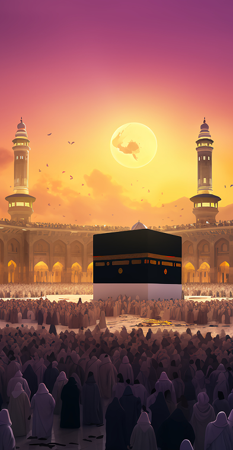
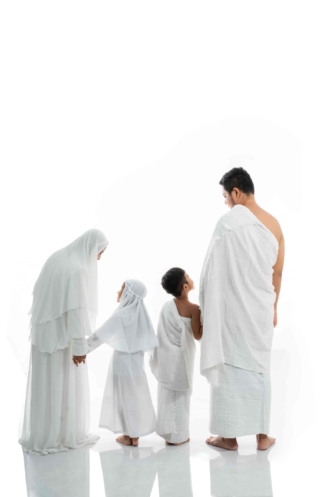

Step-by-step rites
Every rite is broken into clear sub-tasks with a guide. Tick them off as you go and always know what comes next.
Your companion for the sacred journey
Step-by-step guidance for every rite, from Ihram at the Miqat to the Farewell Tawaf. Track your progress, stay close to your companions and get alerts when you reach sacred boundaries.

Everything in one place
Focus on your worship. Hajj Smart keeps track of the rites, the places and the people for you.
Every rite is broken into clear sub-tasks with a guide. Tick them off as you go and always know what comes next.
Connect with family and friends, see which step each of them is on and find them on the map when crowds separate you.
Get a notification when you cross the Miqat boundary or enter Makkah, so you never miss the moment to enter Ihram.
Your progress is saved on your device, so the guide keeps working in crowded areas with weak signal.
Use the whole app in English or Arabic, with full right-to-left support. Switch any time in settings.
Share your profile or invite people from your contacts, so everyone in your group is on the same journey.
Choose your journey
Pick the type of pilgrimage you are performing, then tap any rite to see it.

An overview only. Follow the in-app guide and the advice of your scholars and group leaders.
How it works
Sign in with a phone code, email link, Google or Apple and add your details in under a minute.
Find people by username, add them from your contacts or send an invite link.
Choose Umrah or your type of Hajj and follow each rite, one step at a time.
Questions
Yes. You can download the app, create a profile, follow every journey guide and connect with companions at no cost.
Your journey progress is stored on your phone, so the step-by-step guide keeps working offline. Companion locations and alerts sync again once you are back online.
Only the companions you have accepted. You stay in control: remove a companion at any time from My Connections.
English and Arabic, including a full right-to-left layout. More languages are planned.
Yes. You can end a journey from the trip screen and choose a new one. Note that ending a journey clears its saved progress.
Download Hajj Smart and keep your rites, your places and your people in one place.